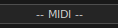
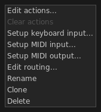

A MIDI channel contains MIDI events. Strictly bound to the sequencer, you can't trigger a MIDI channel manually as you would do with a Sample channel. The main sequencer must be running if you want to play a MIDI channel.
By clicking on the main button  you will be able to edit MIDI events as well as doing further operations. You can add a new MIDI channel by clicking on the button on top of each column on the main window.
A MIDI channel is made of several components. From left to right:
 Play button — starts and stops the channel;
Play button — starts and stops the channel;
 Arm button — arms the channel for recording;
Arm button — arms the channel for recording;
Main button — shows the channel name and allows many operations on it. More information in the paragraph below;
 Mute button — mutes the channel;
Mute button — mutes the channel;
 Solo button — solo mode. Only this channel will be audible;
Solo button — solo mode. Only this channel will be audible;
 FX button — display the plug-ins window;
FX button — display the plug-ins window;
 Volume dial — controls the channel volume.
Volume dial — controls the channel volume.
Clicking on a MIDI channel main button reveals a pop-up menu with several options available:

Edit actions — opens the Action Editor;
Clear actions — deletes all recorded actions from this channel:
Set keyboard input — binds keys to channel;
Setup MIDI input — binds MIDI events to channel. More information in the MIDI input management chapter;
Setup MIDI output — enables MIDI output from this channel. More information in the MIDI output management chapter;
Edit routing — allows to tweak some input and output properties such as panning, volume, ...;
Rename — changes the channel name;
Clone — adds a new channel by making a full copy of the current one;
Delete — removes the channel from the column. All MIDI actions will be deleted as well.
 Off — the channel is stopped;
Off — the channel is stopped;
 Wait/ending (blinking) — the channel is waiting for the first beat to start or is about to stop;
Wait/ending (blinking) — the channel is waiting for the first beat to start or is about to stop;
Play (fixed) — the channel is active and playing.
MIDI channels are playable by clicking on the channel play button
or by pressing the corresponding keyboard/MIDI button if bound:
| event | result |
|---|---|
| click on play button | wait, then start or stop on the next first beat |
| shift + click on play button | immediate stop |
| click on mute button | mute |